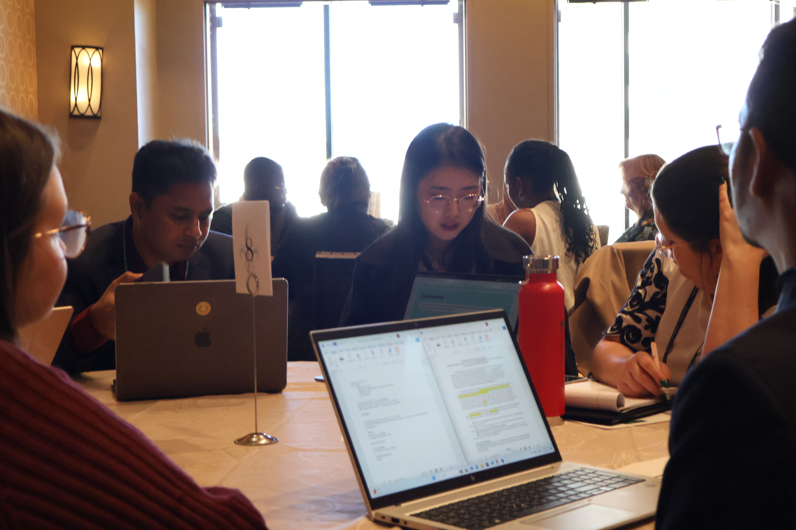
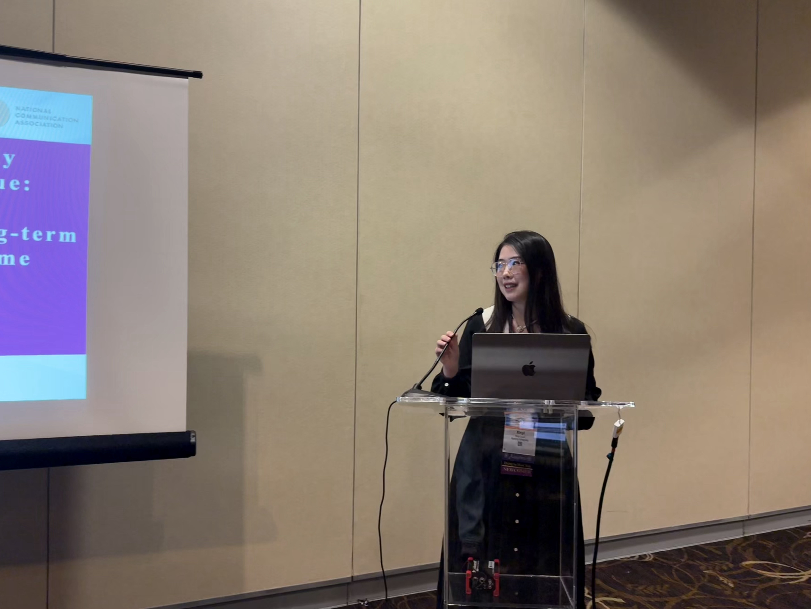

Free AI Website Builder南京大学新闻传播学院博士研究生
关注传媒经济、智能传播与老龄社会治理等领域
发表于《现代传播(中国传媒大学学报)》，2024第九期
通过滚雪球抽样的方式，在福建、河南、山东三地共选取47户老年人家庭，采用实验观察法，首次考察居家环境下为期9个月内老年人如何使用陪伴机器人。研究发现，老年人对居家陪伴机器人的长期使用大致呈现初次接触、积极使用、间歇性中辍和弃用的动态过程。初次接触中，老年人表现出迫不及待、耐心等待学习或被动使用等行为；积极使用中，老年人积极尝试各项功能，不断适应陪伴机器人并做出改变；间歇性中辍使用中，老年人会反复中断但非彻底终止使用；最后老年人出现不再使用，但依然舍不得让陪伴机器人被拿走的行为。研究初步揭示了陪伴机器人这一新型智能媒介走入老年人家庭生活的全过程，为我国智慧养老提供经验数据，更为深入思考人机关系提供参考。
发表于《传媒观察》，2023年第3期
数字技术发展推动新闻业转型，数字新闻产生，引发学界与业界普遍关注。爬梳10年来我国数字新闻与数字新闻学研究相关文献，数字新闻研究经历了从“自发的经验研究”向“自觉的学科构建”的过渡，核心概念界定由模糊到清晰，理论视角与研究方法逐渐多元。未来数字新闻与数字新闻学研究，应在切实解决现实问题的基础上，着力回应如何坚持马克思主义新闻观、建设具有中国特色的数字新闻学这一重要的时代之问。
75th ICA annual conference，（Full paper），一作，2025年6月，美国丹佛。
110th NCA annual conference，（Full paper），一作，2024年11月，美国新奥尔良。
110th NCA annual conference，（Full paper），二作，2024年11月，美国新奥尔良。
109th NCA annual conference，（Full paper），共一，2023年11月，美国国家港。
73th ICA pre-conference，（Extended abstract），一作，2023年5月，加拿大多伦多。


Free AI Website Builder